界面布局
在左侧拼搭积木，右侧会显示正则表达式以及它在目标文本上的结果。
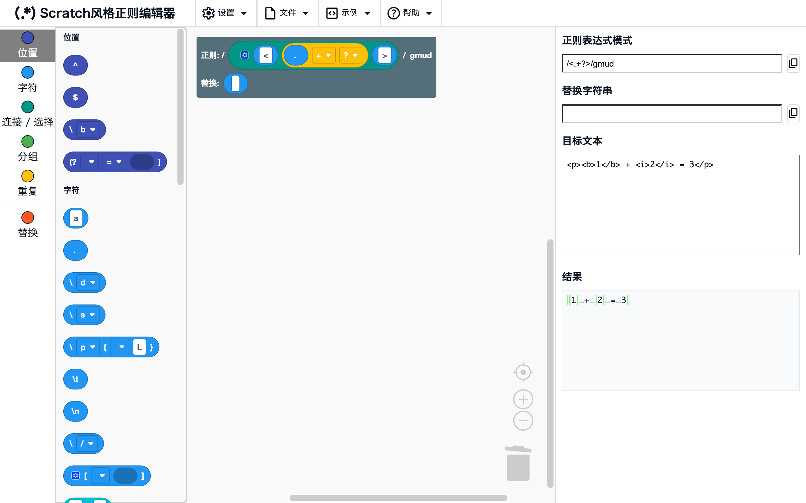
工作区和工具箱
位置界面左侧
从最左边的工具箱中拖出积木，放到工作区里。 工作区一开始就有根积木，正则表达式由连接在它上面的积木生成。 点击工具箱中的分类名称，可以跳到该分类的积木。
正则表达式模式、替换字符串、目标文本和结果
位置界面右侧
- 正则表达式模式：以
/模式/标志的形式显示拼好的正则表达式 - 替换字符串：由连接在根积木替换槽上的积木生成的替换字符串
- 目标文本：输入想用正则表达式测试的文本
- 结果：在目标文本上使用正则表达式的结果（参见结果显示）
修改积木或目标文本后，显示会立即更新。
结果显示
根积木的替换槽为“不替换”时，结果中显示匹配的部分；连接替换积木后，显示替换后的文本。
匹配高亮
位置结果（替换槽为“不替换”时）
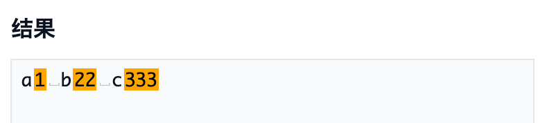
目标文本中与正则表达式匹配的部分显示为橙色。
示例
\d+→a1 b22
替换高亮
位置结果（替换槽连接了积木时）
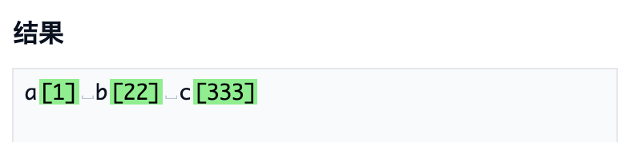
显示替换后的文本，被替换的部分显示为绿色。
示例
- 正则
\d+，替换[$&]→a[1] b[22]
空白字符可视化
位置结果
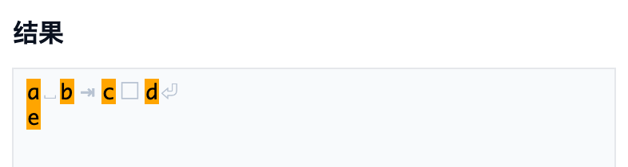
看不见的空白字符会显示为淡色的符号。
␣：空格□：全角空格⇥：制表符⏎：换行
注意
这些符号仅用于显示。从结果中复制时不会包含它们（复制的是原来的空白字符）。
错误显示
位置结果
正则表达式无效时（例如 ( 没有闭合），结果中会显示错误信息。
右键菜单
右键点击积木（手机上长按），会打开针对该积木的操作菜单。
无法使用的操作会显示为灰色。
对于右侧带有 ? 的项目，点击 ? 会在新标签页中打开本页中对该功能的说明。
转换为积木 / 转换为文本
位置右键点击积木 →“转换为积木”/“转换为文本”
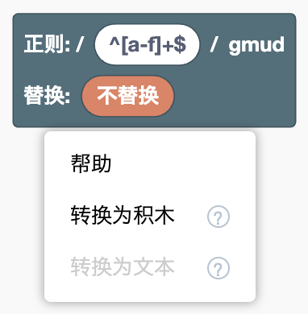
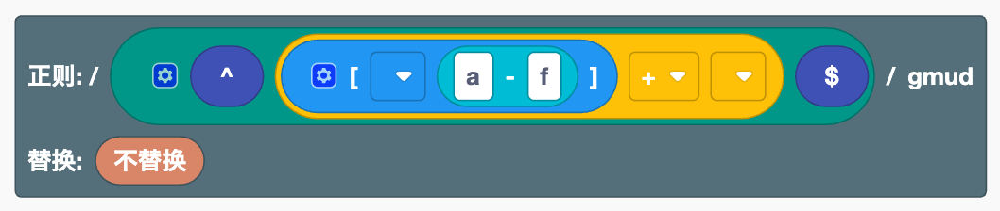
在以文本书写的正则表达式和积木之间双向转换。
- 转换为积木：把文本积木，或在根积木正则槽中输入的正则表达式，变成积木的组合。 右键点击根积木时，会转换它的正则槽中的内容。
- 转换为文本：把右键点击的积木连同它里面的积木一起变成一个文本积木。 如果是连接在根积木正则槽上的积木，根积木会回到直接输入正则表达式的状态。
两种转换都可以用一次 Ctrl+Z（Mac 上为 ⌘+Z）撤销。
示例
- 在根积木的正则槽中输入
^[a-f]+$并转换为积木 → 会变成行首、字符类、范围、+和行尾积木的组合
注意
[ ]积木中或替换槽中的文本积木不能单独转换（要转换的话，请把整个[a-f]写成文本）- 转换为文本后再转换回积木，外部输入等显示设置不会恢复
- 没有对应积木的部分（例如
\x41）会保留为文本积木
合并 N 个 / 取消合并
位置右键点击连接、选择或替换连接中的积木 →“合并2个”到“合并5个”、“合并6个以上…”、“取消合并”
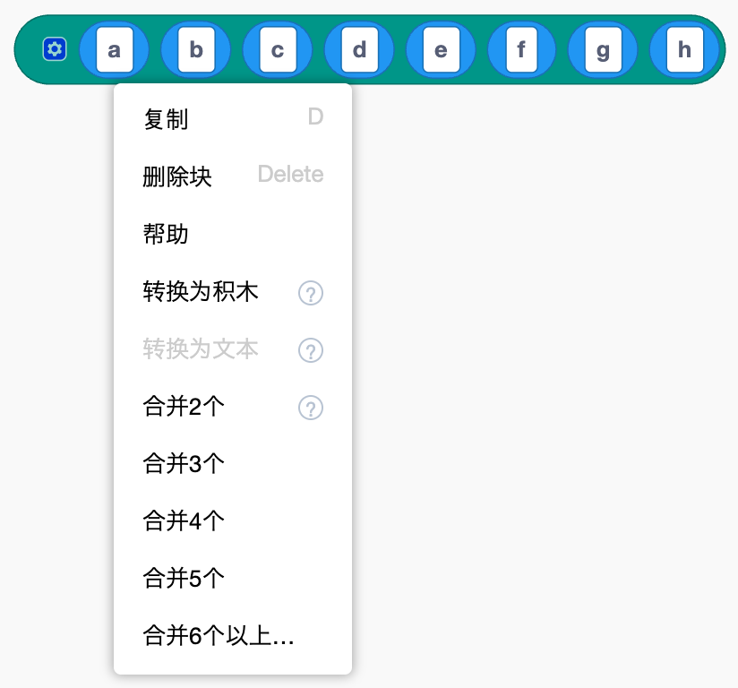

无需拖动就能重新整理连接积木中的内容。
- 合并 N 个：把从右键点击的积木开始向右的 N 个元素，放进一个同种类的新积木中
- 合并6个以上…：先询问要合并的个数，然后进行合并
- 取消合并：把内部同种类积木中的内容，在原来的位置展开到外层积木中
合并不会改变生成的正则表达式。 配合外部输入 / 单行输入使用，可以把又长又复杂的正则表达式整理成有意义的几块，更容易阅读。
示例
- 在包含“a”到“h”的连接中，右键点击 a →“合并4个”→ 变成“(a b c d)”、“e”、“f”、“g”、“h”
注意
不能在字符类 [ ] 中使用（在 [ ] 中放入 [ ] 会变成别的意思）。
外部输入 / 单行输入
位置右键点击有多个槽的积木 →“外部输入”/“单行输入”


切换积木中槽的排列方式。“外部输入”会把槽竖着排列，“单行输入”会把它们恢复为一行。 连接或选择变长时，这样更容易阅读。它不会改变生成的正则表达式。
帮助
位置右键点击积木 →“帮助”
打开积木列表中对该积木的说明。
积木操作
积木的基本操作与 Scratch 相同。在手机上也可以通过点按和拖动进行同样的操作。
基本操作
位置工作区
- 连接：把积木拖到另一个积木的槽（凹进去的部分）上
- 断开：把已连接的积木拖出来
- 删除：把积木拖到工具箱或垃圾桶上，或者选中后按 Delete 键
- 复制：右键 →“复制”。也可以使用 Ctrl+C / Ctrl+V（Mac 上为 ⌘+C / ⌘+V）
- 撤销 / 重做：Ctrl+Z / Ctrl+Shift+Z（Mac 上为 ⌘+Z / ⌘+Shift+Z）。也可以右键点击工作区的空白处
- 整理：右键点击工作区的空白处 →“整理块”
- 放大 / 缩小：右下角的
+-按钮
改变槽的数量
位置点击带有齿轮图标的积木（连接、选择、字符类、替换连接）上的齿轮图标
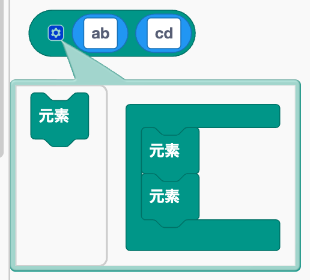
会打开一个小编辑器。增加或删除其中的“元素”积木，就能改变槽的数量。 调整“元素”积木的顺序，槽的顺序也会随之改变。
创建、重命名和删除组名
位置命名分组、命名后向引用或命名分组引用的下拉菜单
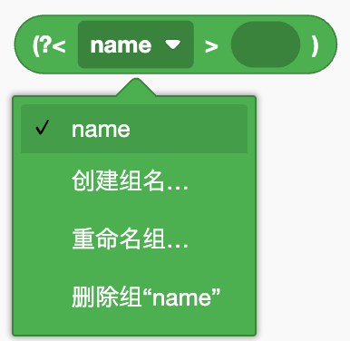
- 创建：选择“创建组名…”并输入名字
- 重命名：选择“重命名组…”。所有使用该名字的积木中的名字也会一起改变
- 删除：选择“删除组“名字””。使用该名字的积木也会一起被删除
注意
名字必须以字母开头，并且只能包含字母、数字和 _。不能使用已经存在的名字。
文件
从顶部菜单的“文件”中使用。可以把拼好的正则表达式保存为文件，之后再加载。
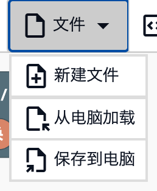
新建文件
位置文件 →“新建文件”
清空工作区和目标文本，回到初始状态。
注意
所有内容都会在没有确认的情况下被清空，而且无法用 Ctrl+Z 撤销。请先保存需要保留的内容。
保存
位置文件 →“保存到电脑”
把工作区中的积木和目标文本下载为名为 regex_workspace.json 的 JSON 文件。
加载
位置文件 →“从电脑加载”
选择保存的 JSON 文件，把积木和目标文本恢复到保存时的状态。
注意
工作区当前的内容会被加载的内容替换。
示例
从顶部菜单的“示例”中加载示例。加载后，试着修改积木，看看结果如何变化。
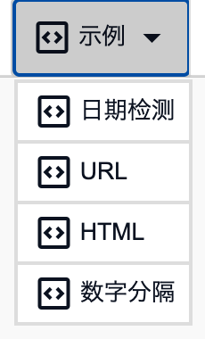
注意
工作区当前的内容会被示例替换。
日期检测
位置示例 →“日期检测”
用分组把 2025-08-20 14:21:03 这样的日期时间拆分成年、月、日、时、分，再用替换重新排列成 2025/08/20⇥14:21。
URL
位置示例 →“URL”
用命名分组从 URL 中提取域名和路径，再用替换变成“域名→路径”的形式。
HTML
位置示例 →“HTML”
用 <.+?> 只删除 HTML 标签。
去掉 + 积木中的 ?，可以看到所有内容都被删除（非贪婪匹配）。
数字分隔
位置示例 →“数字分隔”
用后顾和前瞻匹配数字之间的位置，把 1340 逐位分隔成 1, 3, 4, 0。
设置
从顶部菜单的“设置”中使用。
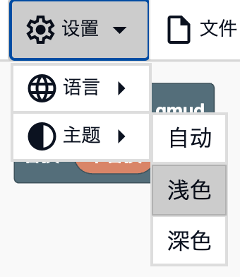
注意
设置不会被保存，重新打开页面后会恢复为默认值。
主题
位置设置 →“主题”
- 自动：根据设备的设置在浅色和深色之间切换
- 浅色：使用浅色配色
- 深色：使用深色配色
语言
位置设置 →“语言”
切换界面和积木的语言。可以从 日本語、English、简体中文、Español、한국어 和 हिंदी 中选择。 一开始会跟随浏览器的语言（如果不支持该语言，则使用 English）。
其他
打开参考文档
位置帮助 →“积木列表”/“功能介绍”
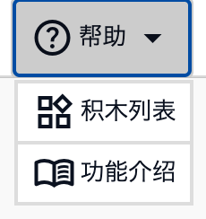
在新标签页中打开积木列表或本页（功能介绍）。 正在编辑的积木会保持原样。
注意
参考文档提供与编辑器相同的六种语言，并以编辑器中选择的语言打开。
复制
位置正则表达式模式和替换字符串右侧的按钮
把正则表达式模式（以 /模式/标志 的形式）或替换字符串复制到剪贴板。
可以粘贴到你自己的程序中使用。
在目标文本中输入制表符
位置目标文本
在目标文本框中按 Tab 键会插入一个制表符，而不是移动到其他输入框。 这在测试用制表符分隔的数据时很方便。